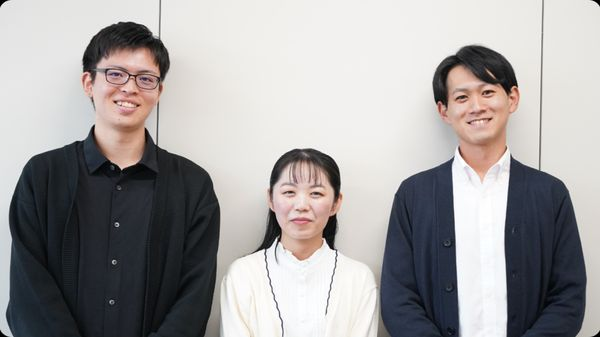
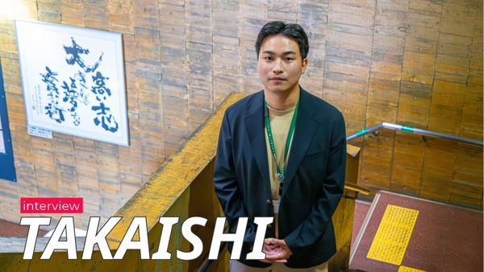
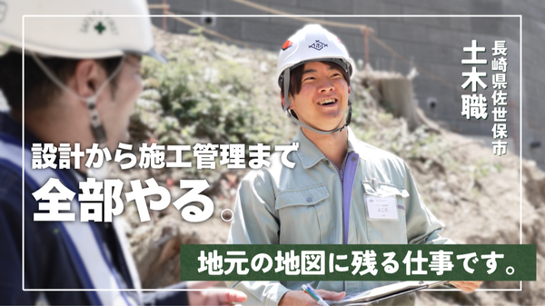
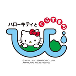
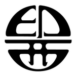
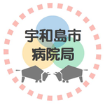
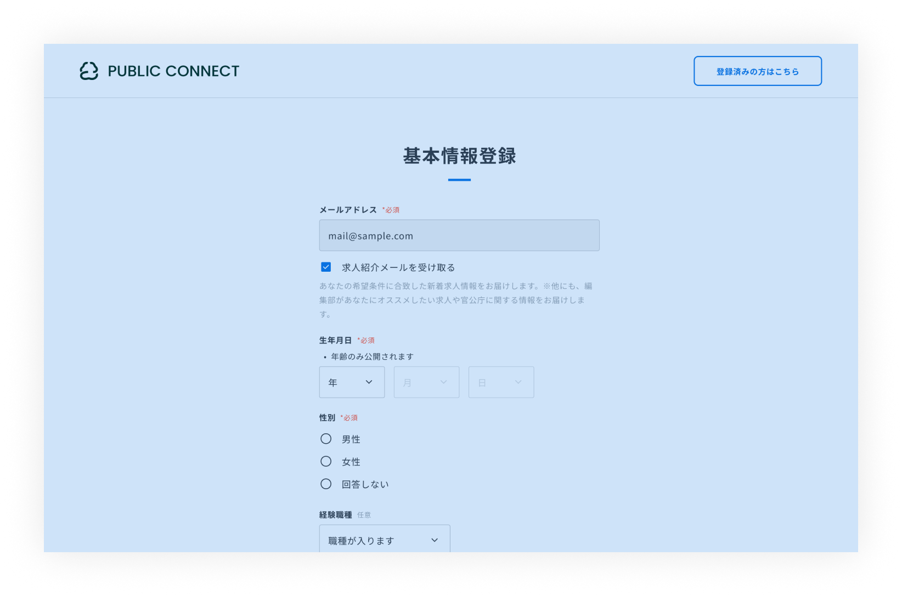

官公庁・自治体で働くならパブリックコネクト

会員登録

求人を探す
職種
勤務地
特徴
官公庁・自治体
官公庁や自治体が運営する採用情報ページです。
お気に入り登録すれば新着通知を受け取ることができます。
相模原市役所
求人募集中
新上五島町役場
求人募集中
球磨村役場
求人募集中
飯田市役所
求人募集中
加賀市医療センター
求人募集中
松野町役場
求人募集中
伊勢崎市役所
求人募集中
志賀町役場
求人募集中
桜川市役所
求人募集中
春日井市役所
求人募集中
登米市役所
求人募集中
甲賀市役所
求人募集中
官公庁・自治体一覧
官公庁・自治体ブログ
官公庁や自治体が作成した、仕事や人、地域の魅力が詰まった記事です。
「どんなこともきける、話せる」。心理的安全性が生み出す連帯感。入庁3年目の若手と係長が語る、豊明市役所のあたたかい人間関係
豊明市
職員インタビュー
NEW

豊明市
職員インタビュー
NEW
豊明市役所
2026/06/06
「お堅い」イメージが180度変わった。若手の“好き”が形になる、浦安市役所の心地よい風通し
職員インタビュー
NEW

職員インタビュー
NEW
浦安市役所
2026/06/05
「自分たちの手で、このまちを守る。」浦安市役所で見つけた、土木職としての“本当の誇り”
職員インタビュー
NEW

職員インタビュー
NEW
浦安市役所
2026/06/05
「次のステージ」を創るのはあなたの力。管理職視点で語る、浦安市役所の「心理的安全性」と「自律」の文化
管理職インタビュー
職員インタビュー
NEW

管理職インタビュー
職員インタビュー
NEW
浦安市役所
2026/06/05
「一人の人間として、誠実に、しなやかに。」多彩なキャリアを力に変え、浦安の未来を創る「自走する組織」の在り方
職員インタビュー
管理職インタビュー
NEW
職員インタビュー
管理職インタビュー
NEW
浦安市役所
2026/06/05
三田市職員座談会 ─PART 1─公務員のイメージが180度変わった。 若手職員が語る、三田市役所での挑戦と発見。
座談会
職員インタビュー
NEW

座談会
職員インタビュー
NEW
三田市役所
2026/06/05
ブログ一覧
官公庁・自治体ムービー
官公庁や自治体、パブリックコネクト編集部が送る仕事や地域、人の魅力が盛りだくさんの動画です。
【いい意味で変な人と働きたい】前例のない、新しい仕事を作り続ける、高石市 駅周辺整備課の仕事とは
インタビュー動画
NEW

インタビュー動画
NEW
高石市役所
2026/06/04
お仕事紹介-精華町で保育士として働こう！-
職員インタビュー
NEW

職員インタビュー
NEW
精華町役場
2026/06/02
【地図に残る仕事】設計から施工管理まで、最初から最後まで携われる佐世保市役所のものづくり
インタビュー動画
NEW

インタビュー動画
NEW
佐世保市役所
2026/06/01
【農業を支える】農地の貸し借りから直売所の管理まで、佐世保市のソフト面を支える若手職員
インタビュー動画
NEW

インタビュー動画
NEW
佐世保市役所
2026/06/01
「枠にとらわれない働き方とは？前橋市役所の面白さと、変化を恐れない若手職員4名の視点」
職員インタビュー
NEW

職員インタビュー
NEW
前橋市役所
2026/05/27
【応募者必見】尼崎市職員厚生会の採用インタビュー：求める人物像と「募集の背景」を徹底解説
採用インタビュー動画
NEW

採用インタビュー動画
NEW
一般財団法人 尼崎市職員厚生会
2026/05/27
ムービー一覧
採用説明会情報
神戸市役所
採用説明会（経験者通年枠・係長級採用選考）
京都市役所
京都市職員業務説明会等の開催予定一覧
瑞浪市役所
6/21(日)公務員合同説明会に参加します
丹波市役所
令和９年４月採用 職員採用説明会
採用説明会情報一覧
官公庁・自治体からのお知らせ
官公庁や自治体からのお知らせをお届けします。
龍ケ崎市役所
インターンシップ【汎用的能力活用型】募集要項の一部変更のお知らせ
伊勢市役所
【三重県伊勢市】前期試験・随時採用試験の受験申込みは6/9（火）17時15分まで！
大洲市役所
【受付中】令和８年度採用試験［一般採用］
藤井寺市役所
【6/5更新】最新の申込者数のお知らせ
お知らせ一覧
特集
まだ知らない官公庁や自治体の魅力を届けるパブリックコネクト編集部の記事です。

職員インタビュー
DX
2026/05/21
【行政DX】ひとに寄り添うDXで、まちの「当たり前」をアップデートした職員たち
職員インタビュー
DX
2026/05/21
【行政DX】ひとに寄り添うDXで、まちの「当たり前」をアップデートした職員たち

採用説明会
2026/03/09
【長崎県内自治体が集結！】パブリックコネクト共催、長崎県市町職員採用説明会（長崎・諫早・佐世保開催）
採用説明会
2026/03/09
【長崎県内自治体が集結！】パブリックコネクト共催、長崎県市町職員採用説明会（長崎・諫早・佐世保開催）

募集説明会
採用説明会
2026/02/26
公務員キャリアMeetup！新潟県内7自治体の採用担当者が集結！
募集説明会
採用説明会
2026/02/26
公務員キャリアMeetup！新潟県内7自治体の採用担当者が集結！
特集一覧
新着求人
新着求人情報をお届けします。
行政事務
令和８年度上北山村職員採用試験（一般事務職）
正規職員
マイカー通勤可
転勤なし
業種未経験OK
...
上北山村役場
その他
【令和8年度会計年度任用職員】社会体育施設等維持管理員
会計年度任用職員
土日祝日休み
マイカー通勤可
服装自由
...

日出町役場
保育士・幼稚園教諭
【短時間勤務】保育士（保育園）（任期付職員/令和8年度随時採用）
任期付職員
マイカー通勤可
職種未経験OK
業種未経験OK

印西市役所
行政事務
【随時採用】宇和島病院 一般事務員
会計年度任用職員
完全週休2日
職種未経験OK
土日祝日休み

宇和島市病院局
新着求人一覧
ABOUT
官公庁・自治体で働くなら
パブリックコネクト
パブリックコネクトは、
日本全国の官公庁・自治体が求人や
採用PRを掲載する求人サイトです。
求人だけでなく、自治体のブログや動画を
見て、希望条件に合う求人に
応募することができます。
ご利用の流れ

無料会員登録
簡単に会員登録ができます。気になる求人や官公庁をお気に入り登録して、通知を受け取りましょう！

プロフィール情報の登録
学歴や職歴などのプロフィール情報を登録します。気になる求人、新着求人にすぐに応募ができます。

求人へのエントリー
求人にエントリー後の官公庁との連絡は、パブリックコネクトのメッセージ機能で行います。
お役立ちコラム
公務員の採用試験を受けたい方は
パブリックコネクトへ
公務員の求人、採用試験に関する情報（応募要件や日程など）をお探しでしたら、官公庁・自治体の求人に特化したサイト・パブリックコネクトをご利用ください。
事務職や保育士、保健師、土木職、地域おこし協力隊など様々な職種の求人を掲載しています。募集内容を見て、気になるものを「お気に入り」に登録すれば、求人やPRコンテンツなどの更新情報の通知が届くようになります。プロフィール情報の登録をすれば、すぐに求人に応募できます。
検索・応募・選考の完了までサイト内で完結しますので、就職や社会人からの転職を効率的に進められます。
よくあるご質問
会員登録してパブリックコネクトを
はじめましょう
登録してはじめる
